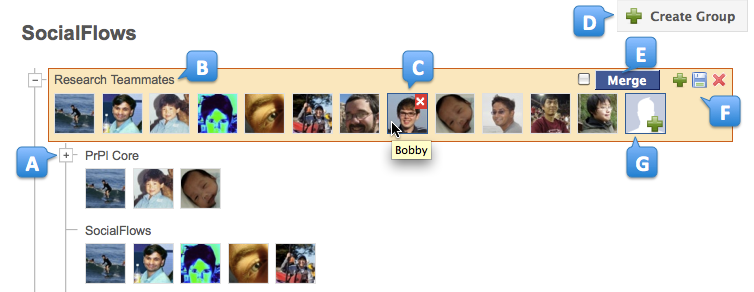

The SocialFlows User Interface

The SocialFlows user interface, allowing you to explore, browse and edit your Social Topology. Annotated points of interest highlight: (A) hierarchical nesting of subsets, (B) editable group labels, (C) tooltip and delete option on mouse hover, (D) new group creation, (E) group merge tools, (F) additional group editing tools, and (G) option to add a new contact.
Overview
The SocialFlows user interface allows you to explore, browse and edit your Social Topology that is
automatically mined from your email. The initial topology, as deduced by our algorithm, may not
necessarily resonate exactly with
your own mental model of your social groups. Nonetheless, the mined topology can provide a very helpful
starting point from which to refine your own model of personal contacts. To this end, the SocialFlows
interface allows you to edit your social topology via group composition and modification.
Editing Social Group Composition
You can edit the composition of a social group by dragging and dropping contacts
between groups, deleting a contact from a group by hovering over and clicking on the
revealed X-mark (C in the above figure), or adding a new contact to a group
through the Add a Contact icon (G in the above figure).
Consolidating and Merging Social Groups
You may also find it useful to consolidate your social groups by merging two or
more selected groups. SocialFlows facilitates this task by placing strongly
similar groups near one another. You can then specify groups to merge by clicking
on each respective group's Merge checkbox (E in the above figure),
and specify the destination group for the merge result by clicking on that group's
Merge button. All merged groups, except the destination group, are then removed.
Creating and Saving Groups
In addition, you can create new top-level social groups using the
Create Group button (D in the above figure). The per-group
manipulation options (F in the above figure) provide
you with the ability to create a new child subset ( )
out of an existing social group, save (
)
out of an existing social group, save ( ) a group, or
delete (
) a group, or
delete ( ) a current social group.
) a current social group.
Saved groups are persisted, and redisplayed at the top whenever you rerun the
algorithm to deduce your social topology. Finally, users can label their
social groups via in-place editing of label text (B in the above figure).
Maintaining Your Social Landscape
SocialFlows also enforces invariants on the social landscape. For
example, a parent in the social topology hierarchy is always a superset of its
children and descendants and, conversely, children social groups are always
subsets of their ancestors. This invariant is maintained in the user interface;
when adding friends or social contacts to a child social group, the added
contacts are then percolated up the SocialFlows tree to maintain each superset.
Likewise, deleting a social contact from a parent social group results in that
same contact being deleted from all subsets.